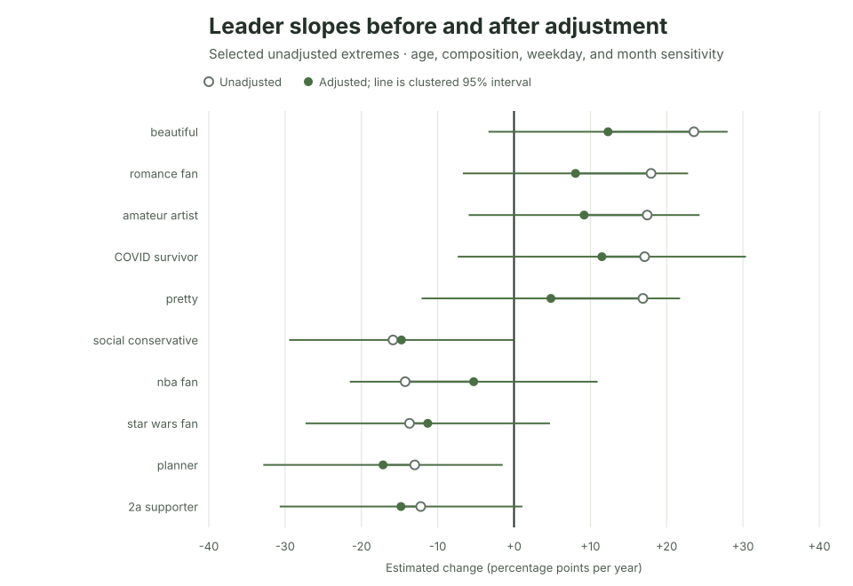

Ipseity Daily Pulse · 2026-09-18
Apparent identity trends soften after comparing like with like
Observed composition and calendar adjustment can soften extreme sample-trend estimates.
By Ceetown · 3 minute read
The most dramatic trend in Ipseity Daily's current sample looks less dramatic after a basic like-with-like comparison.
Among 704 signifiers, beautiful had the largest
unadjusted change: +23.6 percentage points per year. After accounting
for respondents' observed age, sex, ethnicity, student and employment
status—and for weekday and seasonal timing—the estimate was +12.3
points, with a clustered interval from -3.4 to +28.0. Across the 20 most
extreme unadjusted slopes, adjustment moved the estimate by a median 5.5
points per year.
That does not establish an underlying population trend. It demonstrates why raw rankings are leads to investigate, not findings to announce.
Source: Ipseity Daily download page

Evidence note
The values use canonical microdata through 2026-09-17, retrieved at
2026-09-18T10:02:22Z. The 20 signifiers were selected because their
unadjusted slopes were extreme, so neither the rankings nor the adjusted
intervals are a discovery test. Full estimates and limitations are
recorded in CURRENT-FINDINGS.md
and outputs/leader-adjusted-sensitivity.csv.
Snapshot note: This dated entry and figure are preserved from the stated check. Links to the cumulative report and aggregate tables may show newer data.